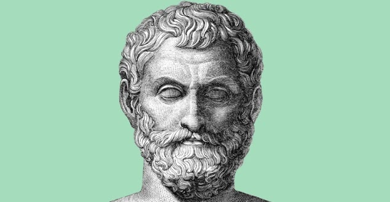

Talles de Mileto
Tales (c. 624-546 a.C.) nasceu na cidade de Mileto, na Grécia antiga. Tales é considerado o primeiro filósofo. Sua obra tem como objetivo buscar explicações racionais para o universo, dando início à filosofia.
Se dedicou também à matemática, criando o teorema que leva seu nome (Teorema de Tales), no qual demonstra relações de proporcionalidade de um feixe de retas paralelas cortadas por transversais.
Na filosofia, a busca pela essência do universo (physis), fez com que ele definisse a água como elemento primordial que constitui tudo aquilo que existe na natureza.
Saiba mais em:Talles de Mileto
